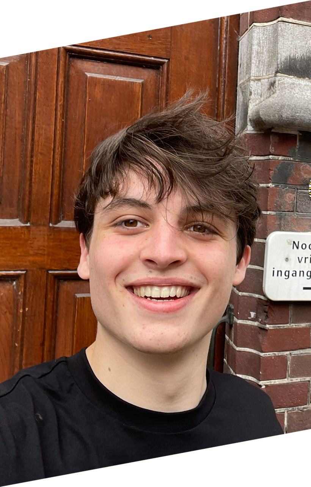
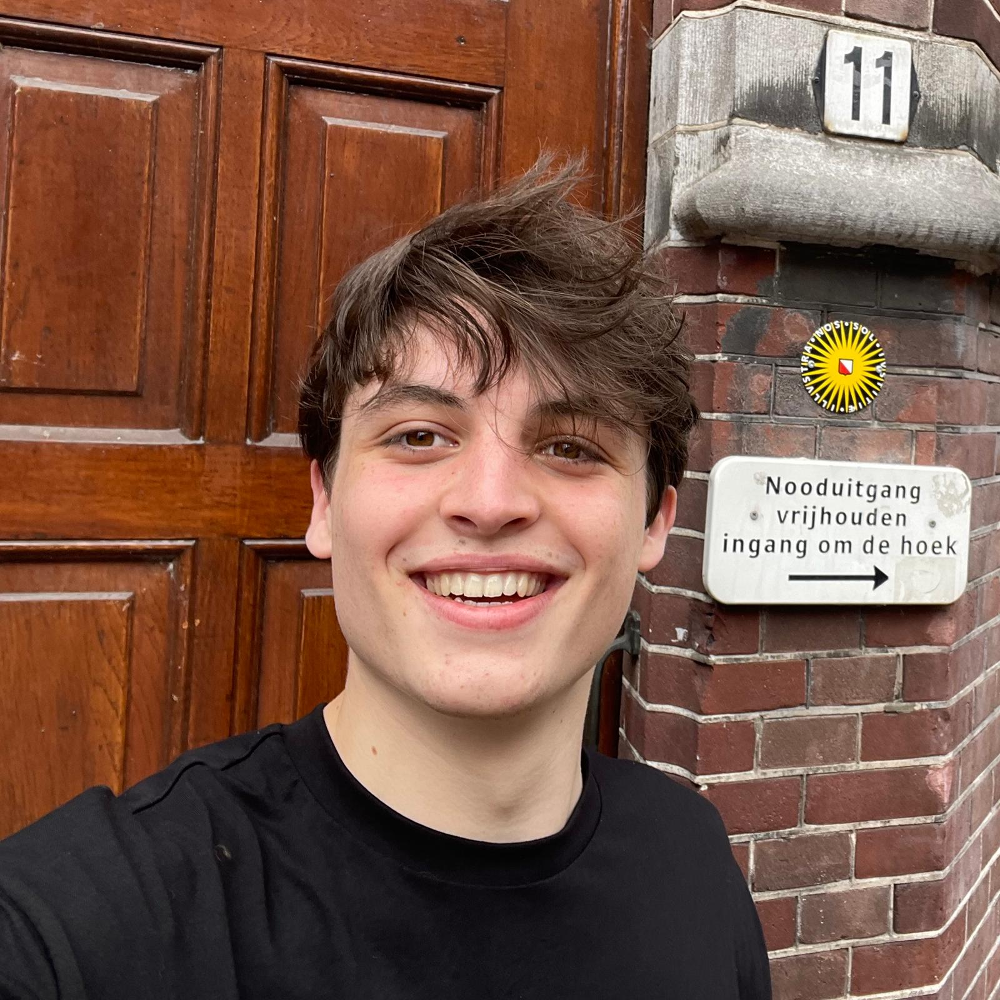
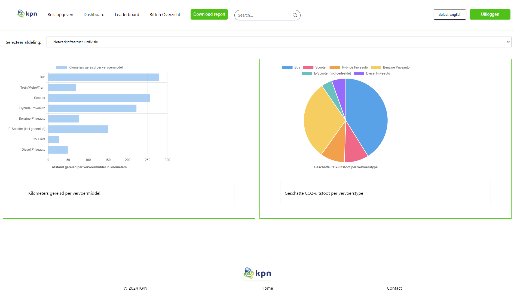
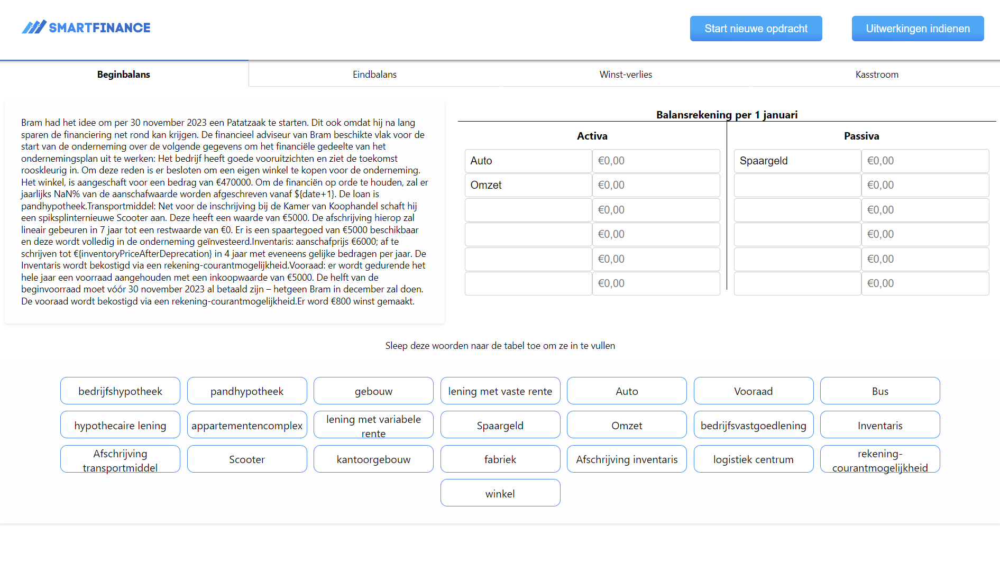

Hi! 👋 Ik ben
Viktor Klijn
Een sociale 20 jarige software development student met een vleugje Deense charme, enthousiast om te ontdekken en te creëren.

Hi! 👋 Ik ben
Een sociale 20 jarige software development student met een vleugje Deense charme, enthousiast om te ontdekken en te creëren.


Ik ben een 20 jarige software development student aan de Hogeschool Utrecht. In de eerste twee jaar van mijn studie heeft de focus op front- en back-end development gelegen. De laatste twee jaar van mijn studie heb ik gekozen voor een specialisatie in front-end development.
Door een programmeercursus voor kinderen op de Leidse Hoge School ben ik op 13 jarige leeftijd voor het eerst in aanraking gekomen met code. De passie was meteen geboren.
Toen ik na de middelbare school een opleiding moest kiezen, was het voor mij al lang duidelijk dat ik de ICT in wilde gaan. De keuze tussen een universitaire of HBO opleiding was voor mij snel gemaakt. Het praktische aspect van de HBO opleiding is wat mij trekt: opdrachten analyseren, uitvoeren, testen en tenslotte het resultaat presenteren.
Ik ben geboren en getogen in Oegstgeest, waar ik tweetalig ben opgevoed (Nederlands/Deens). Door mijn (deels) tweetalige opleiding VWO/TTO ben ik naast Nederlands en Deens ook near-native in Engels.
Mijn weekenden breng ik door als vrolijke bartender in een Utrechts café. De combinatie van studie en werken in een sociale omgeving zorgt voor een perfecte balans.
HTML
CSS
JavaScript
Java
Python
SQL
ReactJS
Lit
Vite
Spring Boot
SCRUM
GIT Version Control

Web application built using Lit, HTML and CSS that visualizes the travel movements of KPN employees in order to keep track of their CO2 emissions. The application is built for KPN during a project at the Hogeschool Utrecht.

Web application built using ReactJS, Spring Boot and SQL that generates assignments for students to practice their financial skills. The application is built for the financial department of the Hogeschool Utrecht.